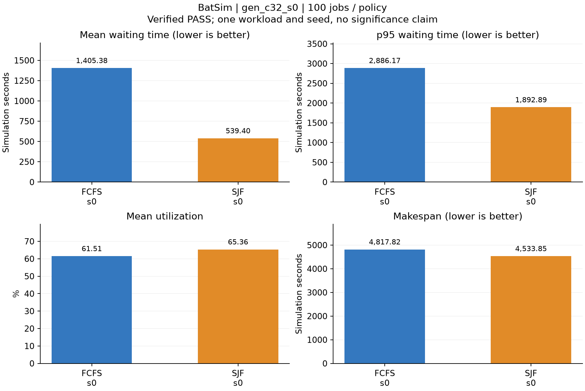
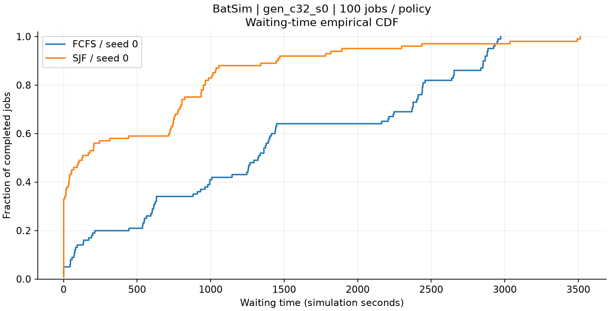
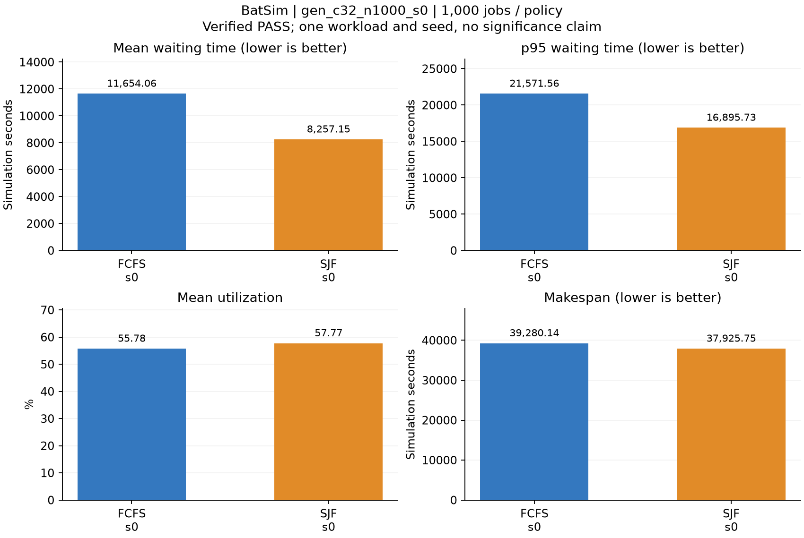
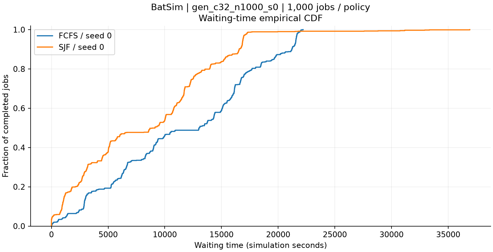
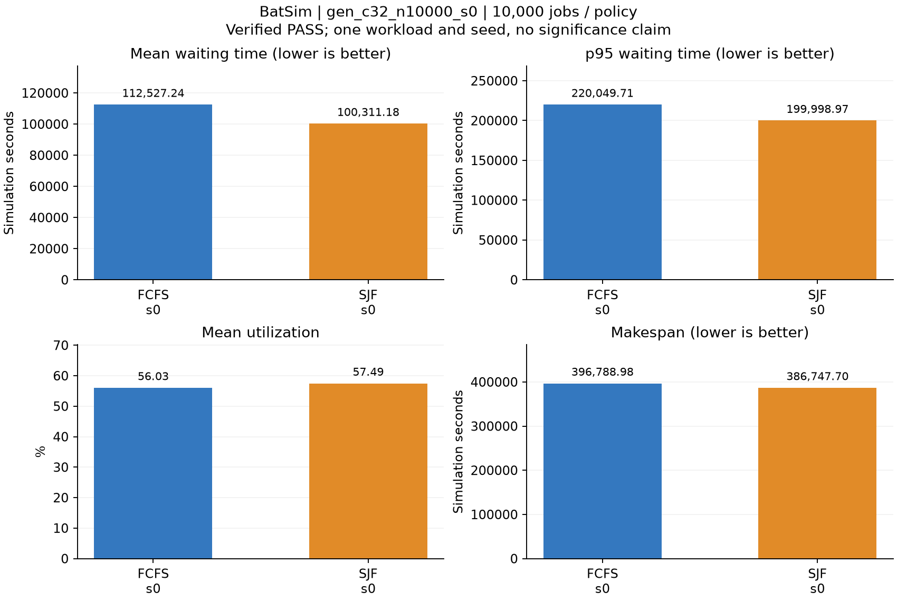
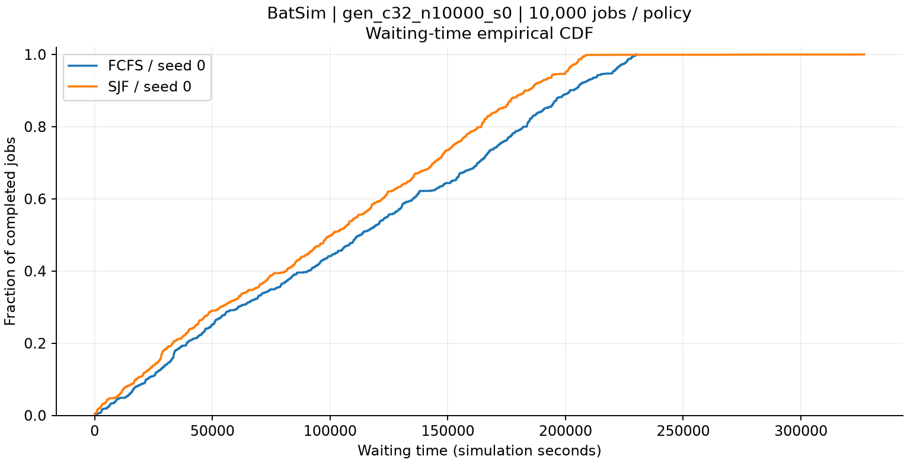

Biểu đồ được xuất từ CSV của từng run SUCCEEDED/PASS. Đây là các workload tổng hợp, không phải kết quả huấn luyện RL hay tốc độ thực thi job sản xuất trên HPC.
So sánh FCFS/SJF trong cùng workload, platform và seed. SJF dùng cửa sổ top-K của môi trường; chưa có bằng chứng tổng quát qua nhiều trace/seed. Không cộng các seed thành một mẫu độc lập.
Trục thời gian dùng giây mô phỏng; utilization là core mô phỏng. p95 dùng nearest-rank như dashboard. CSV tổng hợp: summary.csv. Nguồn và hash: provenance.json.
20261121T080044-9f81ec3deb91SJF giảm thời gian chờ trung bình 61.62% so với FCFS trên workload/seed này.


20261121T190121-6f75ce0d836cSJF giảm thời gian chờ trung bình 29.15% so với FCFS trên workload/seed này.


20261119T154030-82db4fee7e16SJF giảm thời gian chờ trung bình 10.86% so với FCFS trên workload/seed này.

